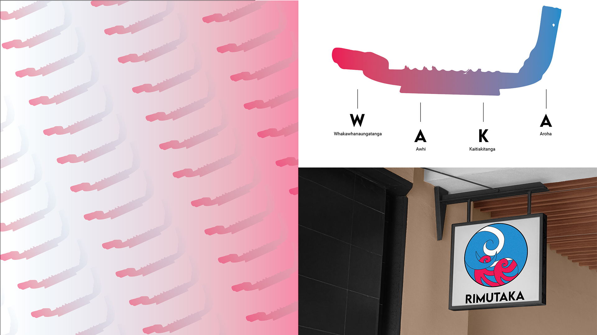

biography
“Ehara taku maunga a maunga Hikurangi I te maunga nekeneke, he maunga tū tonu, he maunga e tauria nei e te huka” Tēnā koutou katoa. My name is Tangiora Maney and I am in my penultimate year studying toward the Bachelor of Design, majoring in Communication Design. I am the first in my family to attend university, I strive to also be the first to graduate.
I grew up wanting to become an accountant, however, when it came down to it, I realised how much I really don’t like maths LOL. One thing I did growing up was draw, draw, eat & draw, so I thought to myself, “graphic design it is”. Here we are👀
project description
This project links back to part of the reasoning as to WHY I wanted to pursue graphic design. My school, Te Ara Whānui Kura Kaupapa Māori o Ngā Kōhanga Reo o Te Awa Kairangi is yet to have its own “full brand”. In my last year of school, their brand only consisted of a colour palette, name and logo. I decided to dedicate this project to the place that provided me with endless opportunities.
TAWKKM Re-Brand

For more information contact us
Email: degreeshow@waikato.ac.nz
Faculty phone: 0800 924 528
Faculty information: cs.waikato.ac.nz